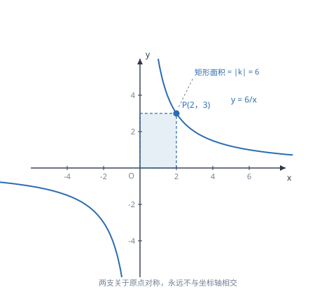

反比例函数与 k 的几何意义
反比例函数的图象是两支双曲线，xy 恒等于 k；正因如此，图象上任意一点与两轴围成的矩形面积总等于 |k|。
| 所属主题 | 函数 |
|---|---|
| 所属模块 | 代数 |
| 课标学段 | 第四学段（7~9 年级） |
| 前置知识 | 一次函数的图象与性质、分式方程 |
| 核心素养 | 几何直观运算能力模型观念 |
教材定位
人民教育出版社《人教版（2024版）义务教育教科书·数学》
九年级上册第27章 反比例函数27.1 反比例函数的概念27.2 反比例函数的图象和性质
对应九上 27.1 与 27.2：概念在 27.1，双曲线与 k 的几何意义在 27.2。
说明
形如 y=k/x（k 是常数，k≠ 0）的函数叫反比例函数，自变量 x≠ 0。它的图象叫双曲线，由两支组成，分别位于两个象限内，两支关于原点对称，且永远不与坐标轴相交——因为 x 不能为 0，y 也不可能为 0。当 k>0 时，两支分别在第一、三象限；当 k<0 时，两支分别在第二、四象限。
反比例函数的增减性有一个必须强调的前提：只在「同一支」内成立。k>0 时，在每一支上 y 随 x 增大而减小，但不能说「整体上 y 随 x 增大而减小」——从一个分支跳到另一个分支时，函数值会从正跳到负，与单调性无关。k 的几何意义是：图象上任意一点向两条坐标轴作垂线，与坐标轴围成的矩形面积恒等于 |k|，连接该点与原点所得的直角三角形面积恒等于 |k|/2。
使用场景
当两个量的乘积是定值时，它们成反比例关系。典型情形：路程一定时速度与时间、工作量一定时效率与时间、压力一定时压强与受力面积、矩形面积一定时长与宽、总价一定时单价与数量。审题时找「乘积不变」这句话，就能判断该用反比例函数。
当题目给出双曲线上一点的坐标、要求矩形或三角形的面积时，用 k 的几何意义最快：不必求解析式、不必算坐标，直接由面积反推 |k|。反过来，已知面积求 k 时要注意符号——面积只给出 |k|，k 的正负还要看图象所在的象限。
注意点
比较两个点对应的函数值大小时，必须先看它们是否在同一支上。若在同一支上，按增减性比较；若分别在两支上，直接由所在象限判断正负即可，不能套用增减性。例如 y=6/x 上，x=-1 时 y=-6，x=1 时 y=6，-6<6，与「y 随 x 增大而减小」的说法看似矛盾，实则两点不在同一支。
由面积求 k 时不要漏绝对值。矩形面积是 |k|，所以已知面积为 6 时，k 可能是 6 也可能是 -6，必须结合图象所在象限确定：在第一、三象限则 k>0，在第二、四象限则 k<0。
证明

图 1：P 在双曲线上移动时，矩形面积始终是 |k|=6，这是 k 的几何意义
证明
结论 1反比例函数 y=k/x 的图象上，任意一点的横坐标与纵坐标之积都等于同一个常数 k。
从定义出发：y=k/x 两边同乘 x，得 xy=k。也就是说，图象上任何一点的横坐标与纵坐标之积都等于 k，这个乘积是一个不随点的位置改变的常数。这一句话包含了反比例函数的全部结构。
关键一步依据是分式的定义与两边同乘 x（x≠ 0 时合法）：y=k/x 与 xy=k 等价，所以「乘积是常数」是这类函数的本质特征，其他性质都由它推出。
结论 2反比例函数图象上任一点向两坐标轴作垂线围成的矩形，面积恒等于 |k|。
由 xy=k 立刻得到矩形面积：点 P(x,y) 向 x 轴作垂线，垂足到原点的距离是 |x|；向 y 轴作垂线，垂足到原点的距离是 |y|。这两条垂线与两条坐标轴围成一个矩形，边长分别是 |x| 与 |y|，面积为 |x|\cdot|y|=|xy|=|k|（图 1）。
关键一步依据是矩形面积等于两邻边之积，而两邻边正是 |x| 与 |y|；再由 xy=k 取绝对值得 |xy|=|k|。所以矩形面积只由常数 k 决定，与点取在哪里无关。
结论 3已知三角形的面积求 k 时要乘以 2，因为每个直角三角形的面积是 |k|/2。
三角形面积是矩形的一半。连接 P 与原点，矩形被对角线分成两个全等的直角三角形（『全等』指能完全重合，等学了全等三角形再严格定义），每个面积为 |k|/2。所以已知三角形面积求 k 时，要乘以 2。
关键一步依据是矩形的对角线把它分成面积相等的两块，所以每块是矩形面积的一半；由矩形面积 |k| 得三角形面积 |k|/2，反求 k 自然要乘 2。
结论 4反比例函数的增减性只在同一支内成立：k>0 时第一象限那一支上 x 增大则 y 减小。
增减性为什么只在同一支内成立：k>0 时，第一象限那一支上 x 增大则 y 减小，因为乘积恒为 k，一个变大另一个必须变小；但第三象限那一支上的点 y 是负的，与第一象限的点比较时，负值总小于正值，与增减无关。所以谈「谁大谁小」之前，先确认两个点在哪一支。
关键一步依据是 xy=k 中 x、y 同号（k>0 时两支内两坐标都同号），乘积固定则一个增大另一个必减小；不同支之间两点异号，大小由正负决定，不能拿同一支的增减规律去比。
结论 5反比例函数的图象不能与坐标轴相交，只能无限接近它们。
图象为什么碰不到坐标轴：若图象与 x 轴相交，则该点纵坐标为 0，代入 xy=k 得 0=k，与 k≠ 0 矛盾；同理也不能与 y 轴相交。所以双曲线只能无限接近坐标轴，却永远不相交。
关键一步依据是 xy=k 与 k≠ 0：坐标轴上的点至少有一个坐标为 0，乘积必为 0，与 k≠ 0 矛盾。所以两类坐标轴都是它无限接近的方向，却永远不会相交。
动手实验
在 y=6/x 上取四个点：(1,6)、(2,3)、(3,2)、(6,1)，逐个算 xy，都得 6。再分别算它们与两轴围成的矩形面积：1× 6=6、2× 3=6、3× 2=6、6× 1=6，全部相等。把四个矩形画在坐标纸上，可以看到形状一个比一个扁，面积却完全一样——这正是「乘积不变」的几何版本。
解题思路
求反比例函数解析式只需一个点：设 y=k/x，把已知点坐标代入求出 k，写回解析式并注明 x≠ 0。若题目给的是面积，就用 |k|= 矩形面积（或 |k|=2× 三角形面积），再由象限定符号。
比较函数值大小走三步：判断两个点各在哪一支（看横坐标的正负，或看纵坐标的正负）；若在同一支，用增减性（k>0 时 x 越大 y 越小，k<0 时相反）；若不在同一支，直接比较正负。最后按题目要求从小到大排列，并说明依据。
解反比例与一次函数的综合题，通常先联立两个解析式求交点（得到一个一元二次方程），再按交点把 x 轴分段，逐段比较两个函数值的大小。求「不等式 k/x>mx+b 的解集」时，图象法比代数法更清楚：看双曲线在直线上方的那些区间。
按场景的例题
例 1（场景：物理情境） 压力一定时压强与受力面积
一个物体对地面的压力是 600 牛。压强 p（帕）与受力面积 S（平方米）满足 p=F/S。写出 p 与 S 的关系式；当 S=0.5 平方米和 S=2 平方米时，压强分别是多少？
解：压力 F=600 为定值，所以 p=600/S（S>0），这是反比例函数，k=600>0，图象在第一象限。当 S=0.5 时，p=600/0.5=1200 帕；当 S=2 时，p=600/2=300 帕。可以看到面积变为原来的 4 倍，压强变为原来的 1/4——乘积 pS=600 始终不变。
答：p=600/S；S=0.5 时 1200 帕，S=2 时 300 帕。
例 2（场景：行程与速度） 路程一定时速度与时间
甲、乙两地相距 120 千米。汽车从甲地到乙地，速度 v（千米/时）与时间 t（时）之间的关系是什么？若要在 2.5 小时内到达，速度至少是多少？
解：由「路程 = 速度 × 时间」得 vt=120，所以 v=120/t（t>0），是反比例函数，k=120>0。要在 2.5 小时内到达，即 t≤ 2.5；因为 k>0 时 v 随 t 增大而减小，t 越小 v 越大，所以 t=2.5 时速度最小：v=120/2.5=48 千米/时。
答：v=120/t；速度至少 48 千米/时。
例 3（场景：图形设计） 双曲线上点构成的矩形面积
反比例函数 y=k/x 的图象经过点 A(2,3)。求 k 的值；求点 A 与两坐标轴围成的矩形面积；求 \triangle OAB 的面积，其中 B 是 A 向 x 轴所作垂线的垂足。
解：把 (2,3) 代入 y=k/x，得 3=k/2，所以 k=6。矩形由 A 向两轴作垂线围成，边长分别是 |2| 与 |3|，面积 =2× 3=6=|k|，与公式一致。\triangle OAB 中 O 为原点、B 为 (2,0)，是直角三角形，直角边 OB=2、AB=3，面积 =1/2× 2× 3=3=|k|/2。
答：k=6；矩形面积 6；三角形面积 3。
常用推论
若 A、B 都在 y=k/x 上，则 x_Ay_A=x_By_B=k。由此可得 \dfracy_Ay_B=\dfracx_Bx_A，即纵坐标之比等于横坐标之比的倒数。这个比例关系在求未知点坐标时很好用。
点 P 在双曲线上，过 P 分别向两轴作垂线，垂足为 A、B，则矩形 OAPB 的面积恒为 |k|。把它沿对角线 OP 分开，得到的两个三角形面积都是 |k|/2；连接两垂足 A、B，\triangle PAB 也是直角三角形（PA\perp PB），面积同样是 |k|/2。凡是这类「求面积」的题，先想 |k|。
反比例函数与一次函数的图象交点个数由联立后的方程决定：由 k/x=mx+b 得 mx^2+bx-k=0，它的判别式决定了交点个数，而两交点关于原点对称（当 b=0 时）。这条把反比例与二次方程、判别式接了起来。
易错点
错因为 y=6/x 中 y 随 x 增大而减小，就断定 x=-2 时的函数值小于 x=1 时的函数值。
为什么错两点不在同一支上。x=-2 时 y=-3，x=1 时 y=6，实际是 -3<6，但这个结论来自正负比较，不是来自增减性。把跨支的两点套用单调性，会得出错误结论。
正确先分支持讨论：同一支内用增减性，不同支直接比正负。x=-2 在第三象限（y=-3），x=1 在第一象限（y=6），负小于正。
错已知双曲线上一点与两轴围成的矩形面积为 6，直接写 k=6。
为什么错面积只给出 |k|=6，k 还可能是 -6。符号要由图象所在的象限决定，第二、四象限时 k<0。
正确先判断象限：若图象在第一、三象限，k=6；若在第二、四象限，k=-6。答题时要写出判断依据。
错认为反比例函数的图象可以与 x 轴或 y 轴相交。
为什么错若与 x 轴相交，交点纵坐标为 0，但 xy=k 且 k≠ 0，矛盾；与 y 轴相交同理（且 x=0 本身不在定义域内）。
正确双曲线无限接近坐标轴但永不相交。画图时要用平滑曲线渐渐靠近轴，不能画到轴上，也不能画成折线。
直观理解
把反比例函数想成「固定面积的长方形在变形」：面积始终是 |k|，一边变长另一边就必须变短。图象上每个点都代表一种长宽搭配，把这些搭配的点连起来，就是双曲线。也正因为它记录的是「同面积的不同形状」，所以任意一点到两轴的距离乘积都相同——这就是矩形面积恒等于 |k| 的直观意思。